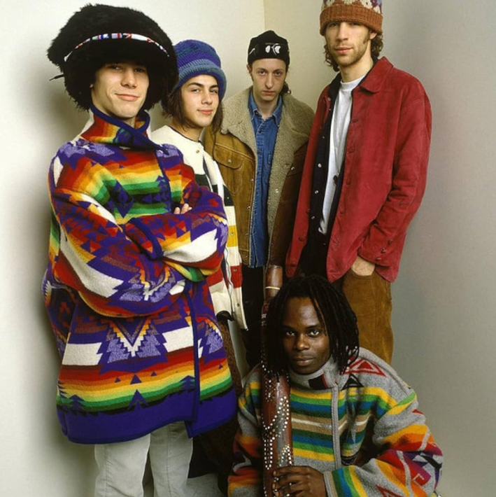
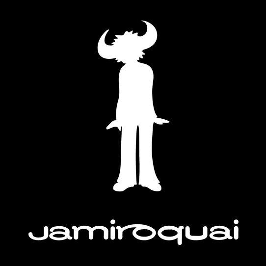
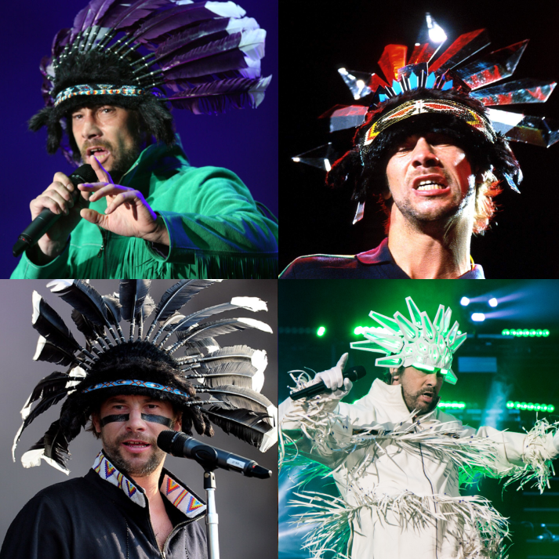
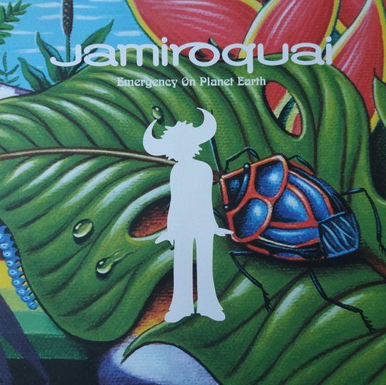
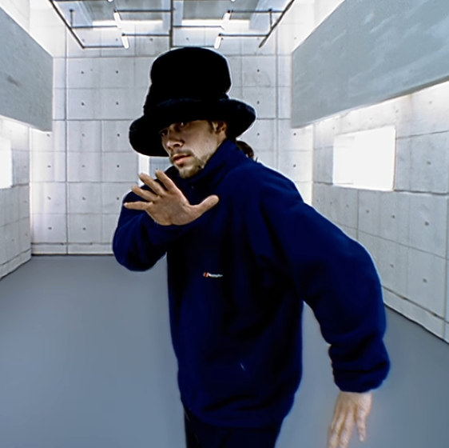

Funk e acid jazz Londrino
Banda formada em Londres em 1992, ligada ao movimento do acid jazz. Começou nos clubes e lançou o primeiro single, “When You Gonna Learn?”, pela Acid Jazz Records.
Seis curiosidades para conhecer a banda de Jay Kay.

Banda formada em Londres em 1992, ligada ao movimento do acid jazz. Começou nos clubes e lançou o primeiro single, “When You Gonna Learn?”, pela Acid Jazz Records.

“Jamiroquai” junta “jam”, de jam session, com “Iroquois”, nome de um povo nativo norte-americano. Jay Kay criou o nome como homenagem.

Jay Kay é o vocalista e o único integrante original ainda na banda. Ficou famoso, também, pelos chapéus grandes e coloridos, que viraram parte de seu visual característico.

Apesar do ritmo vibrante, as letras da banda tratam de temas envolvendo degradação ambiental, mudanças climáticas, pressões da vida moderna e outras formas de crítica social.

Lançada em 1996 no álbum Travelling Without Moving, é a música mais famosa da banda. O clipe, com Jay Kay dançando num cenário que parece deslizar, rendeu um Grammy e quatro prêmios no VMA.
A banda ultrapassou de 26 milhões de álbuns vendidos globalmente, com maior destaque no Reino Unido, Japão e França. Travelling Without Moving (1996) entrou no Guinness como o álbum de funk mais vendido da história.